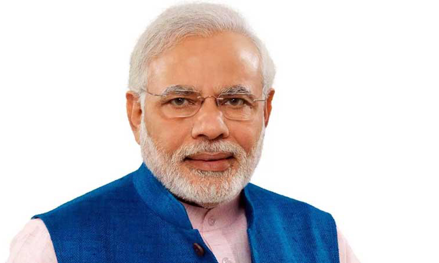

National Politics
Top PM Candidates


Narendra Modi
Prime Minister of India
 70%
70%


Rahul Gandhi
President of the Indian National Congress
30%
State Politics
TOP CM Candidates
Nara Chandrababu Naidu
Leader, President, Chairperson, Parliamentary Chairperson, Chief Minister of Andhra Pradesh
Kuppam Constituency
48%


Y. S. Jaganmohan Reddy
Leader of Opposition in Andhra Pradesh, Legislative Assembly, Member of the India Parliament (Kadapa)
Kuppam Constituency
34%
Pawan Kalyan
Leader and Founder of Janasena Party
Kuppam Constituency
18%